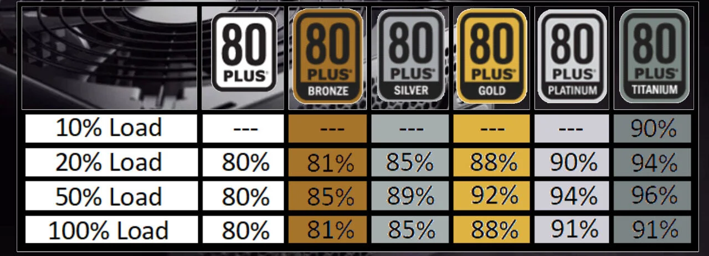

les alimentations
le but des alimentations et de alimenter les composant. il donne tout a la carte mere

les certification

le 80+ normal
cette certification veut dire que cette alimentations a un rendement de 80% max
les alimentations 80+ bronze
les alimentations 80+ bronze on rendement faible qui est de entre 82 et 85%
les alimentations 80+ silver
les alimentations 80+ silver on un rendement entre 85% et 89%
les alimentations 80+ gold
les alimentations 80+ gold on un rendement de 88% ou 92%
les alimentations 80+ platinium
les alimentations 80+ platinium on un rendement entre 90% et 92%
les alimentations 80+ titanium
les alimentations 80+ titanium on un rendement entre 90% et 96%